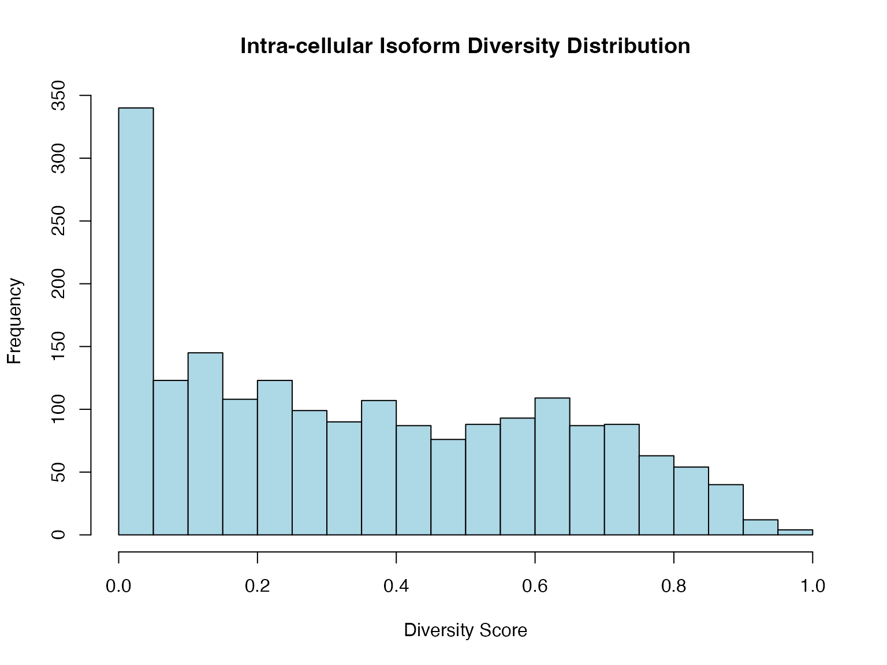
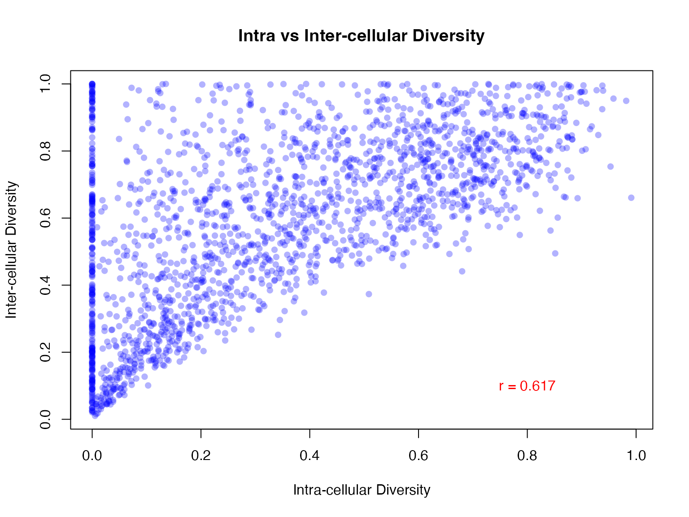
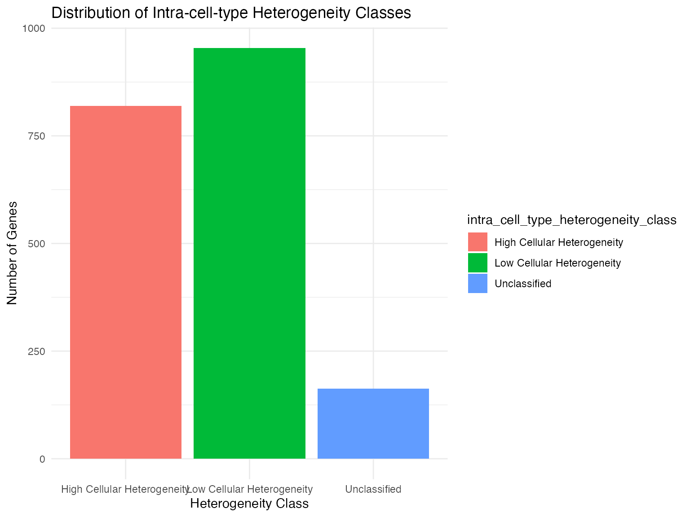
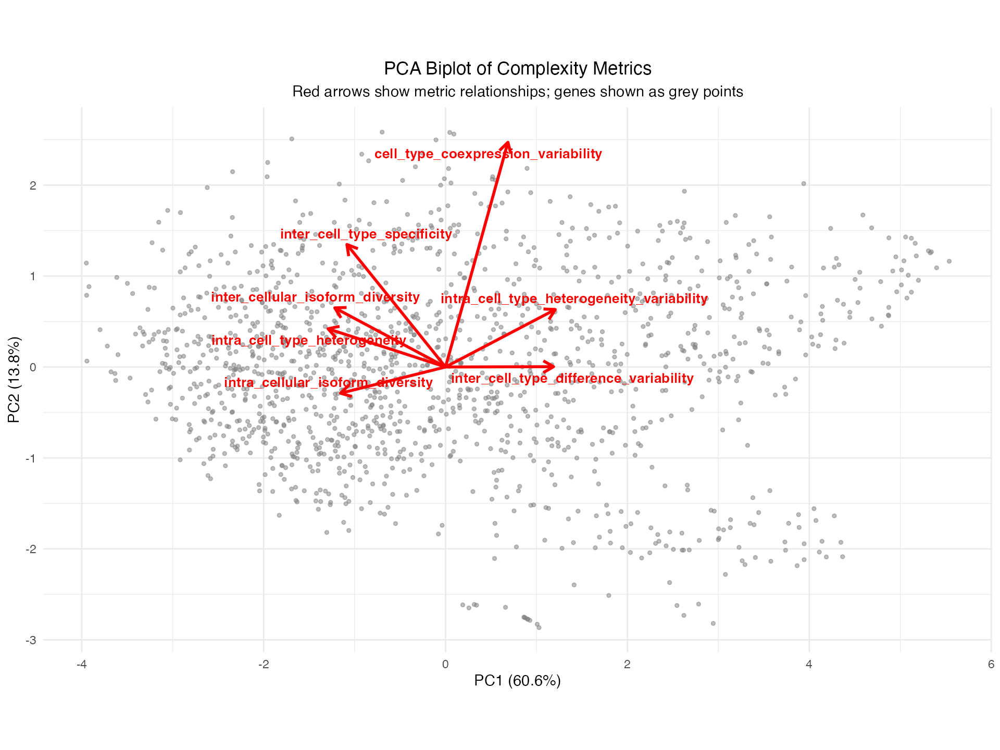
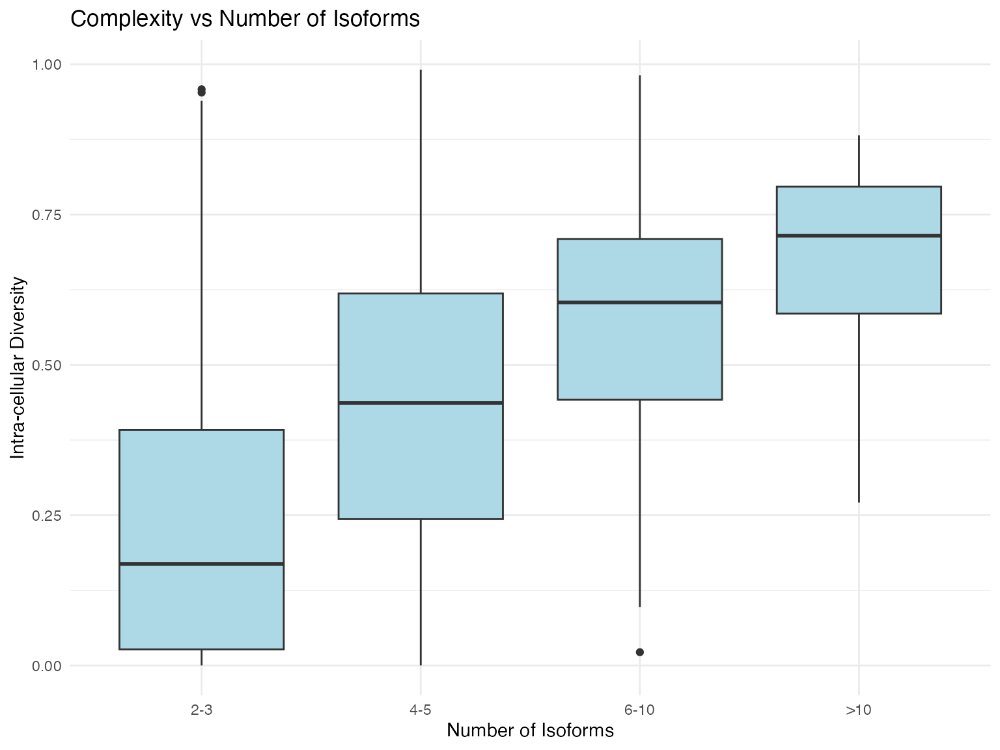

Understanding Transcriptomic Complexity Metrics
Siyuan Wu & Ulf Schmitz
2025-08-01
Source:vignettes/vignette-03-complexity-metrics.Rmd
vignette-03-complexity-metrics.RmdIntroduction
ScIsoX quantifies transcriptomic complexity through seven complementary metrics that capture different aspects of isoform diversity and heterogeneity. This vignette provides detailed explanations of each metric and how to interpret them.
The Seven Core Metrics
# Load example data and create SCHT
data(gene_counts_blood)
data(transcript_counts_blood)
data(transcript_info)
data(sample2stage)
scht_obj <- create_scht(
gene_counts = gene_counts_blood,
transcript_counts = transcript_counts_blood,
transcript_info = transcript_info,
cell_info = sample2stage,
qc_params = list(
min_genes_per_cell = 4000,
max_genes_per_cell = 10000,
min_cells_expressing = 0.02,
min_expr = 1e-6
),
n_hvg = 3000,
verbose = FALSE
)
#>
#> === Sparsity Analysis for Current Dataset ===
#>
#> 1. Original Transcript Matrix:
#> Number of genes: 55,487
#> Number of isoforms: 142,238
#> Number of cells: 205
#> Non-zero elements: 2,457,789
#> Zero elements: 26,701,001
#> Total elements: 29,158,790
#> Sparsity: 91.57%
#>
#> 2. Filtered Transcript Matrix (Post-QC HVG):
#> Number of genes: 1,936
#> Number of isoforms: 7,327
#> Number of cells: 181
#> Non-zero elements: 73,057
#> Zero elements: 1,253,130
#> Total elements: 1,326,187
#> Sparsity: 94.49%
#>
#> 3. SCHT Structure (Post-QC HVG):
#> Non-zero elements: 73,057
#> Zero elements: 154,780
#> Total elements: 227,837
#> Sparsity: 67.93%
#>
#> 4. Naive 3D Tensor (Post-QC HVG):
#> Required dimensions: 1,936 x 21 x 181
#> Non-zero elements: 73,057
#> Zero elements: 7,285,679
#> Total elements: 7,358,736
#> Sparsity: 99.01%
#>
#> 5. Zero Elements Avoided by SCHT:
#> vs Original Matrix: 26,546,221
#> vs Filtered Matrix: 1,098,350
#> vs Naive 3D Tensor: 7,130,899
#>
#> 6. Memory Efficiency Summary:
#> SCHT uses only 0.78% of original matrix size
#> SCHT uses only 17.18% of filtered matrix size
#> SCHT uses only 3.10% of naive tensor size
# Calculate complexity metrics
tc_results <- calculate_isoform_complexity_metrics(scht_obj, verbose = FALSE)1. Intra-cellular Isoform Diversity
What it measures: The tendency of multiple isoforms from the same gene to be co-expressed within individual cells.
Interpretation: - High values: Multiple isoforms are frequently co-expressed in the same cells - Low values: Cells typically express only one isoform at a time
# Visualise distribution
hist(tc_results$metrics$intra_cellular_isoform_diversity,
main = "Intra-cellular Isoform Diversity Distribution",
xlab = "Diversity Score",
col = "lightblue",
breaks = 30)
# Find genes with highest intra-cellular diversity
top_intra <- head(tc_results$metrics[
order(tc_results$metrics$intra_cellular_isoform_diversity, decreasing = TRUE),
c("gene", "intra_cellular_isoform_diversity", "n_isoforms")
], 10)
print(top_intra)
#> gene intra_cellular_isoform_diversity n_isoforms
#> Fsd1l Fsd1l 0.9911077 4
#> Mapk13 Mapk13 0.9817924 7
#> Or51ai2 Or51ai2 0.9584020 3
#> Ptpro Ptpro 0.9530040 3
#> Hsd11b1 Hsd11b1 0.9393115 3
#> Ifitm6 Ifitm6 0.9380286 2
#> Ppp1r36dn Ppp1r36dn 0.9377423 3
#> Tm4sf1 Tm4sf1 0.9304544 5
#> Msantd1 Msantd1 0.9273881 3
#> Atp4a Atp4a 0.9184838 52. Inter-cellular Isoform Diversity
What it measures: How different isoforms are distributed across the cell population.
Interpretation: - High values: Different cells express different isoforms - Low values: All cells express similar isoform patterns
# Compare intra vs inter diversity
plot(tc_results$metrics$intra_cellular_isoform_diversity,
tc_results$metrics$inter_cellular_isoform_diversity,
xlab = "Intra-cellular Diversity",
ylab = "Inter-cellular Diversity",
main = "Intra vs Inter-cellular Diversity",
pch = 16, col = rgb(0, 0, 1, 0.3))
# Add correlation
cor_value <- cor(tc_results$metrics$intra_cellular_isoform_diversity,
tc_results$metrics$inter_cellular_isoform_diversity,
use = "complete.obs")
text(0.8, 0.1, paste("r =", round(cor_value, 3)), col = "red")
3. Intra-cell-type Heterogeneity
What it measures: Cell-to-cell variation in isoform usage within the same cell type.
Interpretation: - High values: Cells of the same type show diverse isoform patterns - Low values: Cells of the same type have consistent isoform usage
# This metric requires cell type information
if (inherits(scht_obj, "IntegratedSCHT")) {
# Visualise by classification
ggplot(tc_results$metrics,
aes(x = intra_cell_type_heterogeneity_class,
fill = intra_cell_type_heterogeneity_class)) +
geom_bar() +
labs(title = "Distribution of Intra-cell-type Heterogeneity Classes",
x = "Heterogeneity Class", y = "Number of Genes") +
theme_minimal()
}
4. Inter-cell-type Specificity
What it measures: How specific isoform usage patterns are to particular cell types.
Interpretation: - High values: Strong cell type-specific isoform usage - Low values: Similar isoform patterns across cell types
# Find cell type-specific genes
if ("inter_cell_type_specificity" %in% colnames(tc_results$metrics)) {
ct_specific <- tc_results$metrics[
tc_results$metrics$inter_cell_type_specificity_class == "Cell-Type-Specific Isoform Expression",
c("gene", "inter_cell_type_specificity")
]
print(paste("Found", nrow(ct_specific), "genes with high cell type specificity"))
head(ct_specific)
}
#> [1] "Found 636 genes with high cell type specificity"
#> gene inter_cell_type_specificity
#> Cd177 Cd177 1
#> S100a8 S100a8 1
#> S100a9 S100a9 1
#> Shtn1 Shtn1 1
#> Ceacam10 Ceacam10 1
#> Oas3 Oas3 15. Intra-cell-type Heterogeneity Variability
What it measures: How much the cell-to-cell heterogeneity varies across different cell types.
Interpretation: - High values: Some cell types are more heterogeneous than others - Low values: All cell types show similar levels of heterogeneity
Interpreting Metric Classifications
# Summary of classifications
classification_summary <- lapply(
grep("_class$", names(tc_results$metrics), value = TRUE),
function(col) {
table(tc_results$metrics[[col]])
}
)
names(classification_summary) <- gsub("_class$", "",
grep("_class$", names(tc_results$metrics), value = TRUE))
print(classification_summary)
#> $intra_cellular_isoform_diversity
#>
#> Strong Isoform Co-expression Weak Isoform Co-expression
#> 704 1232
#>
#> $inter_cellular_isoform_diversity
#>
#> High Isoform Diversity Low Isoform Diversity
#> 595 1341
#>
#> $intra_cell_type_heterogeneity
#>
#> High Cellular Heterogeneity Low Cellular Heterogeneity
#> 819 954
#> Unclassified
#> 163
#>
#> $inter_cell_type_specificity
#>
#> Cell-Type-Independent Isoform Expression
#> 1300
#> Cell-Type-Specific Isoform Expression
#> 636
#>
#> $intra_cell_type_heterogeneity_variability
#>
#> Consistent Heterogeneity Across Cell Types
#> 892
#> Insufficient Cell Type Data
#> 492
#> Variable Heterogeneity Across Cell Types
#> 552
#>
#> $inter_cell_type_difference_variability
#>
#> High Cell-Type Distinctions Insufficient Difference Data
#> 943 137
#> Low Cell-Type Distinctions
#> 856
#>
#> $cell_type_coexpression_variability
#>
#> Cell-Type-Adaptive Co-expression Cell-Type-Consistent Co-expression
#> 596 1156
#> Insufficient Data
#> 184Finding Genes with Specific Patterns
Example 1: Highly Complex Genes
# Genes with high complexity in multiple dimensions
complex_genes <- find_complexity_pattern(
tc_results$metrics,
pattern = list(
intra_cellular_isoform_diversity_class = "Strong Isoform Co-expression",
inter_cellular_isoform_diversity_class = "High Isoform Diversity"
)
)
print(paste("Found", length(complex_genes), "highly complex genes"))
#> [1] "Found 20 highly complex genes"
print(head(complex_genes))
#> [1] "Cd177" "S100a8" "S100a9" "Il7" "Nup62cl" "Crb3"Example 2: Simple but Cell Type-Specific
# Genes with low diversity but high cell type specificity
specific_simple <- find_complexity_pattern(
tc_results$metrics,
pattern = list(
intra_cellular_isoform_diversity_class = "Weak Isoform Co-expression",
inter_cell_type_specificity_class = "Cell-Type-Specific Isoform Expression"
)
)
if (length(specific_simple) > 0) {
print(paste("Found", length(specific_simple), "simple but specific genes"))
}
#> [1] "Found 20 simple but specific genes"Visualising Metric Relationships
# Define all seven core metrics
metric_cols <- c(
"intra_cellular_isoform_diversity",
"inter_cellular_isoform_diversity",
"inter_cell_type_specificity",
"intra_cell_type_heterogeneity",
"intra_cell_type_heterogeneity_variability",
"inter_cell_type_difference_variability",
"cell_type_coexpression_variability"
)
# Filter to available metrics in the dataset
available_metrics <- metric_cols[metric_cols %in% names(tc_results$metrics)]
metric_data <- tc_results$metrics[, available_metrics]
metric_data <- metric_data[complete.cases(metric_data), ]
# Standardise the data for PCA
metric_scaled <- scale(metric_data)
# Perform PCA analysis
pca_result <- prcomp(metric_scaled)
# Create data for biplot
pca_scores <- as.data.frame(pca_result$x[, 1:2])
pca_scores$gene <- tc_results$metrics$gene[complete.cases(tc_results$metrics[, available_metrics])]
# Extract loadings (metric contributions)
pca_loadings <- as.data.frame(pca_result$rotation[, 1:2])
pca_loadings$metric <- rownames(pca_loadings)
# Scale loadings for better visualisation
scale_factor <- 3
pca_loadings$PC1 <- pca_loadings$PC1 * scale_factor
pca_loadings$PC2 <- pca_loadings$PC2 * scale_factor
# Create PCA biplot
library(ggrepel)
ggplot() +
# Gene points (in grey)
geom_point(data = pca_scores,
aes(x = PC1, y = PC2),
alpha = 0.5, colour = "grey50", size = 1) +
# Metric vectors (red arrows)
geom_segment(data = pca_loadings,
aes(x = 0, y = 0, xend = PC1, yend = PC2),
arrow = arrow(length = unit(0.3, "cm")),
colour = "red", size = 1) +
# Metric labels
geom_text_repel(data = pca_loadings,
aes(x = PC1, y = PC2, label = metric),
colour = "red", fontface = "bold", size = 3.5) +
labs(title = "PCA Biplot of Complexity Metrics",
subtitle = "Red arrows show metric relationships; genes shown as grey points",
x = paste0("PC1 (", round(summary(pca_result)$importance[2,1]*100, 1), "%)"),
y = paste0("PC2 (", round(summary(pca_result)$importance[2,2]*100, 1), "%)")) +
theme_minimal() +
theme(plot.title = element_text(hjust = 0.5),
plot.subtitle = element_text(hjust = 0.5)) +
coord_equal()
# Print variance explained
cat("Variance explained by principal components:\n")
#> Variance explained by principal components:
print(summary(pca_result)$importance[, 1:3])
#> PC1 PC2 PC3
#> Standard deviation 2.059705 0.9829898 0.7287917
#> Proportion of Variance 0.606060 0.1380400 0.0758800
#> Cumulative Proportion 0.606060 0.7440900 0.8199700Interpretation:
- Arrows pointing in similar directions: Metrics that tend to increase together
- Arrows pointing in opposite directions: Metrics that are inversely related
- Arrow length: Indicates how well the metric is represented in the first two PCs
- Gene distribution: Shows how genes cluster based on their complexity profiles
Note: The specific relationships between metrics will vary depending on your dataset and biological context.
Case Studies
Case Study 1: Constitutive vs Alternative Splicing
# Compare genes with different numbers of isoforms
tc_results$metrics$isoform_category <- cut(
tc_results$metrics$n_isoforms,
breaks = c(2, 3, 5, 10, Inf),
labels = c("2-3", "4-5", "6-10", ">10"),
include.lowest = TRUE
)
# How does complexity relate to number of isoforms?
ggplot(tc_results$metrics,
aes(x = isoform_category, y = intra_cellular_isoform_diversity)) +
geom_boxplot(fill = "lightblue") +
labs(title = "Complexity vs Number of Isoforms",
x = "Number of Isoforms",
y = "Intra-cellular Diversity") +
theme_minimal()
Case Study 2: Identifying Regulatory Genes
# Genes with variable complexity patterns might be regulatory
# High inter-cellular diversity but low intra-cellular diversity
# suggests cell-state dependent isoform switching
potential_regulatory <- tc_results$metrics[
tc_results$metrics$inter_cellular_isoform_diversity >
quantile(tc_results$metrics$inter_cellular_isoform_diversity, 0.75, na.rm = TRUE) &
tc_results$metrics$intra_cellular_isoform_diversity <
quantile(tc_results$metrics$intra_cellular_isoform_diversity, 0.25, na.rm = TRUE),
]
print(paste("Identified", nrow(potential_regulatory), "potential regulatory genes"))
#> [1] "Identified 57 potential regulatory genes"
if (nrow(potential_regulatory) > 0) {
head(potential_regulatory[, c("gene", "n_isoforms",
"intra_cellular_isoform_diversity",
"inter_cellular_isoform_diversity")])
}
#> gene n_isoforms intra_cellular_isoform_diversity
#> B3galt1 B3galt1 2 0
#> Cxxc4 Cxxc4 2 0
#> Tac1 Tac1 2 0
#> Dnah7a Dnah7a 2 0
#> 1700019L13Rik 1700019L13Rik 2 0
#> Fbxl16 Fbxl16 2 0
#> inter_cellular_isoform_diversity
#> B3galt1 0.9754361
#> Cxxc4 0.9466857
#> Tac1 0.9333993
#> Dnah7a 0.9651509
#> 1700019L13Rik 0.8662512
#> Fbxl16 0.9504299Exporting Results
# Export metrics for further analysis
write.csv(tc_results$metrics,
file = file.path(tempdir(), "complexity_metrics.csv"),
row.names = FALSE)
# Create summary report
summary_stats <- summary(tc_results)
#> Isoform Complexity Analysis Summary:
#> Total genes analysed: 1936
#>
#> NA Value Statistics (representing biologically meaningful cases):
#> - Intra-cellular Isoform Diversity : 0 genes (0.0%) - Occurs when genes have only one expressed isoform, indicating lack of alternative splicing
#> - Inter-cellular Isoform Diversity : 0 genes (0.0%) - Occurs when only one isoform is expressed across the entire cell population
#> - Intra-cell-type Heterogeneity : 163 genes (8.4%) - Occurs when a cell type has insufficient cells expressing the gene (< 3 cells)
#> - Inter-cell-type Specificity : 0 genes (0.0%) - Occurs for genes expressed in only a single cell type (high cell type-specificity)
#> - Intra-cell-type Heterogeneity Variability: 492 genes (25.4%) - Occurs when a gene is expressed in fewer than 2 cell types with sufficient data
#> - Inter-cell-type Difference Variability: 137 genes (7.1%) - Occurs when there are insufficient pairwise differences between cell types to calculate variability
#> - Cell-type-specific Co-expression Variability: 184 genes (9.5%) - Occurs when a gene lacks sufficient cell type-specific expression data to compare co-expression patterns
#>
#> Classification Distribution Across Complexity Dimensions:
#>
#> Intra-cellular Isoform Diversity:
#> - Strong Isoform Co-expression : 704 genes (36.4%)
#> - Weak Isoform Co-expression : 1232 genes (63.6%)
#>
#> Inter-cellular Isoform Diversity:
#> - High Isoform Diversity : 595 genes (30.7%)
#> - Low Isoform Diversity : 1341 genes (69.3%)
#>
#> Intra-cell-type Heterogeneity:
#> - High Cellular Heterogeneity : 819 genes (42.3%)
#> - Low Cellular Heterogeneity : 954 genes (49.3%)
#> - Unclassified : 163 genes (8.4%)
#>
#> Inter-cell-type Specificity:
#> - Cell-Type-Independent Isoform Expression: 1300 genes (67.1%)
#> - Cell-Type-Specific Isoform Expression : 636 genes (32.9%)
#>
#> Intra-cell-type Heterogeneity Variability:
#> - Consistent Heterogeneity Across Cell Types: 892 genes (46.1%)
#> - Insufficient Cell Type Data : 492 genes (25.4%)
#> - Variable Heterogeneity Across Cell Types: 552 genes (28.5%)
#>
#> Inter-cell-type Difference Variability:
#> - High Cell-Type Distinctions : 943 genes (48.7%)
#> - Insufficient Difference Data : 137 genes (7.1%)
#> - Low Cell-Type Distinctions : 856 genes (44.2%)
#>
#> Cell-type-specific Co-expression Variability:
#> - Cell-Type-Adaptive Co-expression : 596 genes (30.8%)
#> - Cell-Type-Consistent Co-expression : 1156 genes (59.7%)
#> - Insufficient Data : 184 genes (9.5%)
#>
#> Traditional Complexity Categories:
#> - High Diversity + High Specificity : 319 genes (16.5%)
#> - High Diversity + Low Specificity : 276 genes (14.3%)
#> - Low Diversity + High Specificity : 317 genes (16.4%)
#> - Low Diversity + Low Specificity : 1024 genes (52.9%)
#>
#> Cell-Type-Specific Genes:
#> - Single cell-type genes : 23 genes (1.2%)
#>
#> Core Metrics Statistics:
#>
#>
#> |Metric | Mean| Median| SD| Min| Max| Threshold| NA_Percent|
#> |:--------------------------------------------|-----:|------:|-----:|----:|-----:|---------:|----------:|
#> |Intra-cellular Isoform Diversity | 0.351| 0.321| 0.270| 0.00| 0.991| 0.456| 0.000|
#> |Inter-cellular Isoform Diversity | 0.591| 0.630| 0.257| 0.01| 1.000| 0.758| 0.000|
#> |Intra-cell-type Heterogeneity | 0.363| 0.367| 0.230| 0.00| 1.000| 0.389| 8.419|
#> |Inter-cell-type Specificity | 0.401| 0.382| 0.230| 0.00| 1.000| 0.497| 0.000|
#> |Intra-cell-type Heterogeneity Variability | 0.770| 0.620| 0.625| 0.00| 2.646| 0.832| 25.413|
#> |Inter-cell-type Difference Variability | 0.646| 0.567| 0.342| 0.00| 1.620| 0.552| 7.076|
#> |Cell-type-specific Co-expression Variability | 1.032| 0.972| 0.702| 0.00| 2.646| 1.389| 9.504|
#>
#> Performance metrics:
#> Processing time: 82.89 seconds (1.38 minutes)
#> Memory utilised: 1011.84 MBAdvanced Interpretation Tips
- Look for outliers: Genes with extreme values often have interesting biology
- Consider metric combinations: Single metrics tell only part of the story
- Relate to gene function: Different gene categories show characteristic patterns
- Account for technical factors: Low expression can affect metric reliability
Session Information
sessionInfo()
#> R version 4.4.3 (2025-02-28)
#> Platform: aarch64-apple-darwin20
#> Running under: macOS Sequoia 15.5
#>
#> Matrix products: default
#> BLAS: /Library/Frameworks/R.framework/Versions/4.4-arm64/Resources/lib/libRblas.0.dylib
#> LAPACK: /Library/Frameworks/R.framework/Versions/4.4-arm64/Resources/lib/libRlapack.dylib; LAPACK version 3.12.0
#>
#> locale:
#> [1] en_US.UTF-8/en_US.UTF-8/en_US.UTF-8/C/en_US.UTF-8/en_US.UTF-8
#>
#> time zone: Australia/Brisbane
#> tzcode source: internal
#>
#> attached base packages:
#> [1] grid stats graphics grDevices utils datasets methods
#> [8] base
#>
#> other attached packages:
#> [1] ggrepel_0.9.6 ComplexHeatmap_2.22.0 ggplot2_3.5.2
#> [4] ScIsoX_1.1.1
#>
#> loaded via a namespace (and not attached):
#> [1] bitops_1.0-9 gridExtra_2.3
#> [3] rlang_1.1.6 magrittr_2.0.3
#> [5] clue_0.3-66 GetoptLong_1.0.5
#> [7] ggridges_0.5.6 matrixStats_1.5.0
#> [9] compiler_4.4.3 png_0.1-8
#> [11] systemfonts_1.2.1 vctrs_0.6.5
#> [13] pkgconfig_2.0.3 shape_1.4.6.1
#> [15] crayon_1.5.3 fastmap_1.2.0
#> [17] XVector_0.46.0 labeling_0.4.3
#> [19] promises_1.3.3 Rsamtools_2.22.0
#> [21] rmarkdown_2.29 UCSC.utils_1.2.0
#> [23] ragg_1.4.0 purrr_1.1.0
#> [25] xfun_0.52 zlibbioc_1.52.0
#> [27] cachem_1.1.0 GenomeInfoDb_1.42.3
#> [29] jsonlite_2.0.0 progress_1.2.3
#> [31] later_1.4.2 DelayedArray_0.32.0
#> [33] BiocParallel_1.40.0 parallel_4.4.3
#> [35] prettyunits_1.2.0 cluster_2.1.8.1
#> [37] R6_2.6.1 bslib_0.9.0
#> [39] RColorBrewer_1.1-3 rtracklayer_1.66.0
#> [41] car_3.1-3 GenomicRanges_1.58.0
#> [43] jquerylib_0.1.4 diptest_0.77-1
#> [45] Rcpp_1.1.0 SummarizedExperiment_1.36.0
#> [47] iterators_1.0.14 knitr_1.50
#> [49] IRanges_2.40.1 httpuv_1.6.16
#> [51] Matrix_1.7-3 tidyselect_1.2.1
#> [53] viridis_0.6.5 rstudioapi_0.17.1
#> [55] abind_1.4-8 yaml_2.3.10
#> [57] miniUI_0.1.1.1 doParallel_1.0.17
#> [59] codetools_0.2-20 curl_6.4.0
#> [61] lattice_0.22-6 tibble_3.3.0
#> [63] plyr_1.8.9 withr_3.0.2
#> [65] shiny_1.11.1 Biobase_2.66.0
#> [67] evaluate_1.0.4 moments_0.14.1
#> [69] desc_1.4.3 circlize_0.4.16
#> [71] mclust_6.1.1 Biostrings_2.74.1
#> [73] pillar_1.11.0 MatrixGenerics_1.18.1
#> [75] carData_3.0-5 DT_0.33
#> [77] foreach_1.5.2 stats4_4.4.3
#> [79] plotly_4.11.0 generics_0.1.4
#> [81] RCurl_1.98-1.16 S4Vectors_0.44.0
#> [83] hms_1.1.3 scales_1.4.0
#> [85] xtable_1.8-4 glue_1.8.0
#> [87] lazyeval_0.2.2 tools_4.4.3
#> [89] BiocIO_1.16.0 data.table_1.17.8
#> [91] ggradar_0.2 GenomicAlignments_1.42.0
#> [93] fs_1.6.6 XML_3.99-0.18
#> [95] cowplot_1.2.0 tidyr_1.3.1
#> [97] colorspace_2.1-1 patchwork_1.3.0
#> [99] GenomeInfoDbData_1.2.13 restfulr_0.0.15
#> [101] Formula_1.2-5 cli_3.6.5
#> [103] textshaping_1.0.0 S4Arrays_1.6.0
#> [105] viridisLite_0.4.2 dplyr_1.1.4
#> [107] gtable_0.3.6 sass_0.4.10
#> [109] digest_0.6.37 BiocGenerics_0.52.0
#> [111] SparseArray_1.6.2 rjson_0.2.23
#> [113] htmlwidgets_1.6.4 farver_2.1.2
#> [115] htmltools_0.5.8.1 pkgdown_2.1.3
#> [117] lifecycle_1.0.4 httr_1.4.7
#> [119] mime_0.13 GlobalOptions_0.1.2
#> [121] ggExtra_0.10.1 MASS_7.3-65